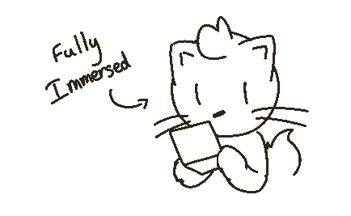
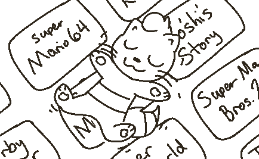
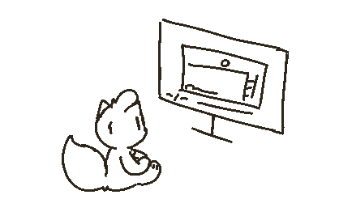
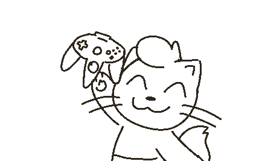

Growing up, I was a big Nintendo fan, and I pretty much played all of the mainstream titles. Mario and Kirby were the big ones, but the one franchise that has always stuck with me up until today is Kirby. It's a franchise that touches my heart in a way I can't describe. It is easy but also challenging. It is very simple but has insanely deep lore. They can be enjoyed by anyone regardless of their gaming background, and that is why I am so fascinated by the Kirby series.
I was born in 2003, so this pretty much kept me out of the loop with the older titles in the 90's. My parents would buy me the newest Kirby titles whenever I begged for them, and I still appreciate them for that. But, I never got a chance to experience Kirby's first appearances. My first Kirby game was Kirby Super Star Ultra, with Return to Dream Land soon after. These two games are (in my opinion) peak Kirby experiences, so I was very lucky to be born at the right time to experience these as a kid.
Considering I had a Wii, I had the opportunity to browse the Wii Shop Channel's Virtual Console, and there I would find many older games that peaked my interest. Some of these games were one's I've seen on the internet before, notably Super Mario World, while some were games that my parents grew up with, like the original Super Mario Bros on NES. I was able to grow up with these games as if I were a "90's kid" which is probably my influence for feeling nostalgic for these games.
My primary eagerness toward these games was that they were made before I even existed. It was hard to believe, and even now it is hard to believe, that I wasn't even a concept to the world when these games were made. There were times that I was tempted to second-guess the decision to buy these. My parents would say that these games were "bad" and that the newer games are leagues better, and in a way they are not wrong. The graphics are better and you have a lot more functionality nowadays, notably online play. But, my curiosity would get the best of me and I needed to play them. And you probably wouldn't have guessed it, but I had such a fun time playing these games, whether it be Super Mario World or Mario 64, it felt surreal to experience these past titles. I remember trying to do BLJs up the endless stairs, good times.
One game that really stuck out to me though was Kirby Super Star on the Super Nintendo. When I was younger, I wasn't aware that Ultra was a remake of an already existing game until I came across it on the Wii Shop Channel. The concept of a "previous Kirby Super Star" existing was an awe-inspiring moment. It didn't feel real, but it was. It was on my screen, right there, with a huge button to purchase it, and that button was pressed immediately.
So here I am as a kid, buying a game that has less content than the game I played prior, and I end up beating the game to 100% completion in the span of a couple of days, enjoying every second I played. I was in love with it. Not so much because of the game by itself, but because I wanted to search for all of the differences and changes across the original and its remake.
When playing this older version, it definitely felt dated, which brought more charm to it in a way. It was a feeling of "damn, this is what people had to deal with back then". This didn't stop me from playing it though, and this was a feeling that was felt across the rest of the Virtual Console games I purchased. But, it felt a bit different with KSS, considering that I played its direct remake previously. This started to get me thinking about what other Kirby games were out there that I was not aware of.
Thankfully, I was searching at the right time, as Kirby's Dream Collection was just released. I was able to save up the money to buy it, and my god is this collection worth every penny.
The collection came with 6 classic Kirby games, a History timeline of every single Kirby game, and a minigame challenge mode using assets from Return to Dream Land. The classic games in this collection was one of my largest retro gaming influences.
I remember playing most of the games and thinking the controls were so janky. You weren't able to press Jump in the air to float, and instead you were forced to press the Up button. I also thought that the graphics were very funky and strange. But... that's what made them so cool. It got me thinking about the games and how we progressed so far to get to where we are today.
The History timeline was just... I can't even describe it. Browsing through all of these games and trying to think about what they are about. Nightmare in Dream Land, Amazing Mirror, Air Ride?? Where are these in the collection? I have never heard of these games before, and now I wanted to play them!!
I pretty much played through all of the games to a satisfying degree. I wasn't able to beat all of them, whether that be due to difficulty or just flat out being overwhelmed by 6 games in 1. These games, plus the History mode, made me even more curious about older video games and, in general, the technology of the past. This video game compilation shaped who I am today.
Though I heavily enjoyed this compilation, I didn't play older video games all the time. I still played new releases on the Wii(U) and (3)DS. However, I still had the retro itch every once in a while. I continued to buy Wii(U) Virtual Console games, and I bought a few GameBoy games on my 3DS.
A few years later, I was invited to a friends house that I recently met in high school. He enjoyed video games like me, but told me that he collected a few older consoles, and for some reason I desperately wanted to see them. Playing these games on the Wii was a very close experience to the original hardware, but I wanted to see the real thing. Of all things to see, I always wanted to hold a Nintendo 64 controller. I wanted to, just... hold the damn thing and play with it. The damn thing was made for an alien. We played a bunch of SNES and N64 games on his CRT, and this pretty much told me "I need to buy these for myself."
So, in 2016, I bought myself a used Nintendo 64 off eBay. And, well, the console worked! The Nintendo 64 was my first "retro console". I made this my first because of how significant the difference was between the Wii and the actual console, notably the controller. Booting it up for the first time felt so strange. In a way, it felt like it wasn't meant to be; to be playing an N64 game in this current generation. But here I was, enjoying an N64 game. The game in question being... Major League Baseball. Definitely a lame game, but it was the game that came with the console, so I had to make do with what I had.
Eventually, I bought a Super Nintendo and all of my Virtual Console games on the real cartridges. Right after this, I managed to find a CRT television on the side of the road, which was perfect timing. From here, I accrued the rest of the Nintendo consoles. This, in turn, led me to buying consoles I hardly even had any interest in, such as the PlayStation, Xbox, and Sega Genesis, which allowed me to experience these games and to realize why these consoles are so loved by many. I bought so many that I, inevitably, started to run out of room to keep all of these.
Come 2020, the virus hits the world and I am stuck in my home unable to do much, but I was fortunate enough to have collected all of these video games to enjoy. Amongst the boredom, I got myself invested in speedrunning video games, notably ones in the Kirby series, and to this day, this is one of my favorite ways to get replay value out of older games.
Throughout these last few years or so, I thought about all of the games that I have been playing, and I have pretty much submersed myself in retro video games. I hardly played any PC or Switch games, and it was mostly on the Super Nintendo where I would spend my time.
I thought about how, in the past, I thought these games were strange and odd, but I no longer thought this way. The controls weren't janky, the graphics weren't strange, these weren't "retro" games, they were just... games. These were video games that I enjoyed more than the current generation. What happened? Did I mature enough to like these games in relation to the time period they were made? Maybe newer games just suck now and older games are all the rage? Why do I think differently now?
To answer my own question, I would have to say it is because I have normalized retro gaming for myself. I have played so many of them that they no longer feel old to me, and they are able to co-exist with modern games. They don't need to be online or have the best top of the line graphics. They just need to be challenging, or have a good story (or just be a Kirby game, wink). Rather than playing these games just because "they're old" like I used to as a kid, I play them for their content, for the curiosity of "I wonder what this game is about", or because it is a popular game loved by many. I hardly think of how old they are any more, in all honesty. These games seem to age well once you play them a lot.
If you are someone who is hesitant to start playing older games, whether it is because of prior non-enjoyment of a game on an emulator or due to how expensive things are now, I would still consider it if you have the itch to try it. Playing on emulator and playing on real hardware are two very different experiences. I have gotten endless hours of enjoyment on my older consoles, and I would say that the money I put into them (albeit sometimes ludicrous, especially today) was well worth it.